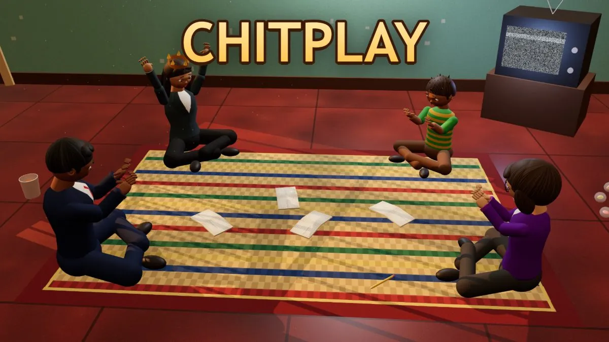

How to play the chit game: a complete guide

The chit game is one of the simplest party games there is: four folded slips of paper, one secret each, and one person who has to work out who is lying. This guide explains every step, walks through a complete round with real scores, and shows how the same game works in CHITPLAY on a phone or computer.
The four roles
Every round uses four chits. The names change from country to country, but the jobs stay the same. The King (Raja, Mayor, Tonosama) holds the most points, usually 1000. The Queen (Rani, Wazir, Mantri, Banker) holds 800. The guesser, most often the Police (Sipahi, Sheriff, Bobby), holds 500 and has one task: name the Thief. The Thief (Chor, Robber, Dorobo, Mafia) starts with nothing and tries to stay hidden. In a few editions the guessing job belongs to a different role, for example the Wazir in Raja Wazir Chor Sipahi.
Setting up
You need four players and four slips of paper of the same size. Write one role and its points on each slip, fold them the same way so nobody can tell them apart, shake them in your hands and drop them on the floor or a table. Agree on the number of rounds before you start: five or seven rounds make a good match, and twenty make a long evening.
One round, step by step
First, everyone picks a chit and reads it without letting anyone else see. Second, the guesser announces themselves, so everyone knows who is hunting. Third, the other three keep a straight face while the guesser studies them, asks questions and listens to the table talk. Fourth, the guesser points at one person. Finally, everybody opens their chit and the scores are written down.
How scoring works
If the guesser names the Thief correctly, the guesser keeps their points and the Thief scores nothing. If the guess is wrong, the classic rule says the guesser and the Thief swap: the guesser scores nothing and the Thief takes the guesser’s points. The King and Queen always keep their own points. After the last round the totals are added up and the highest score wins.
A complete example
Asha draws the King, Ben the Queen, Chetan the Police and Divya the Thief. Chetan announces he is the Police. Ben laughs too quickly and Chetan points at him. Ben opens his chit: Queen. The guess is wrong, so the points swap. Asha scores 1000, Ben 800, Chetan 0 and Divya, the Thief who stayed calm, scores 500. In the next round the chits are shuffled again, so everybody has a new role and a new chance.
Regional twists
Many countries add a rule of their own. In some editions one innocent player is cleared before the guess. In others a witness gives a tip that is right most of the time, the guesser gets a second try for half points, or a caught Thief pays a fine. Each game page on CHITPLAY explains its own rules in full, with a scoring example.
Playing it in CHITPLAY
Open www.chitplay.com, choose your edition and press Play. Computer players fill the empty seats, bluff, react and talk, so you can play alone. Single Phone mode passes one phone around a room, and Play with Friends lets up to four people join from their own phones with a 6-digit code or a QR code. Your chit stays private on your own screen, the scores are kept for you, and the game remembers your rank between visits.
Printable chits
To play on paper, write King 1000, Queen 800, Police 500 and Thief 0 on four slips. If your family grew up with different names, use those: the game is the same. Keep a score sheet with one column per player and one row per round, and agree on a light-hearted forfeit for last place before the first round.
Play it now
Cops and Robbers, also known as Raja Rani Chor Police, Chor Sipahi, Mafia or Räuber und Gendarm: one game, every name.
Questions
How many players do you need?
Exactly four chits are used, so four players is the classic game. With fewer people, CHITPLAY adds computer players to the empty seats.
How long does a game take?
A round takes about a minute. A five-round match takes five to ten minutes.
Who is the guesser?
Whoever draws the guessing chit in that round, usually the Police. Because the chits are shuffled every round, everyone gets a turn.
Is it a gambling game?
No. The points are only a score for the match. Nothing is bought, bet or won, and the game is free.